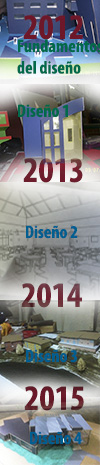

Este proceso inico en los conceptos fundamentales los cuales vemos en FUNDAMENTOS DEL DISEÑO hasta llegar al DISEÑO ARQUITECTONICO 9. Que seria el inicio del final de la carrera.

Proceso y aprendizaje en Diseño Arquitectonico
Facultad de Arquitectura USAC